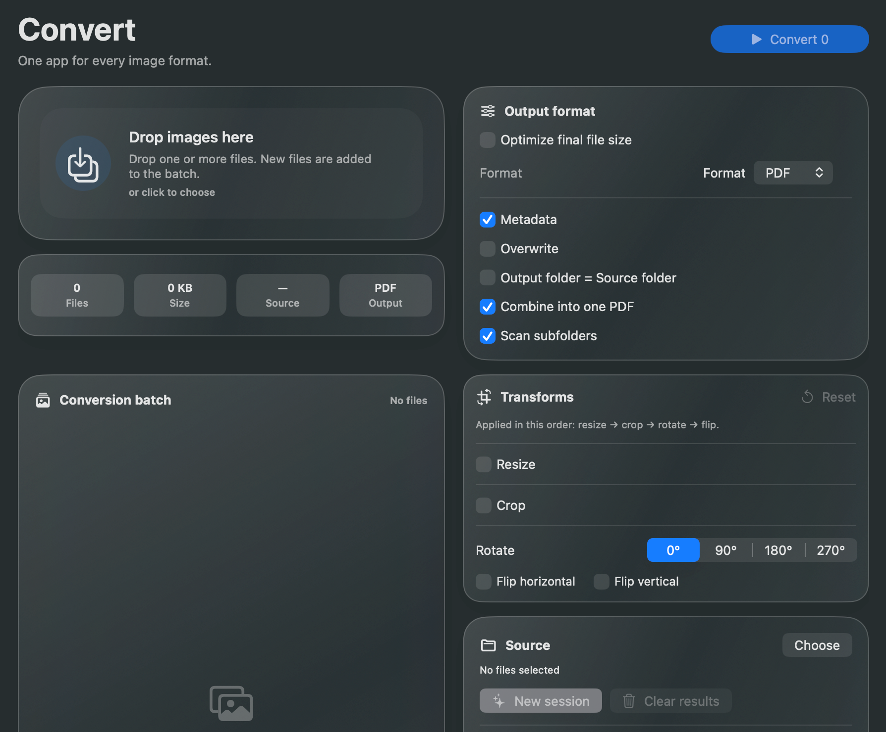
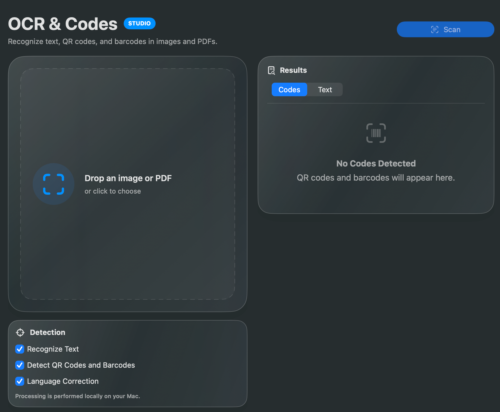
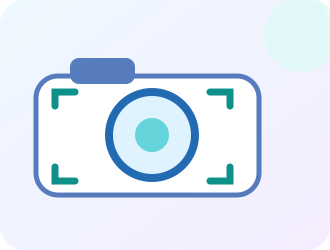
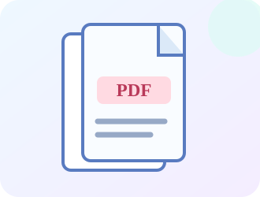
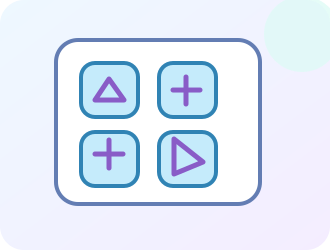
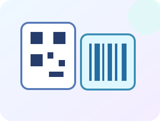
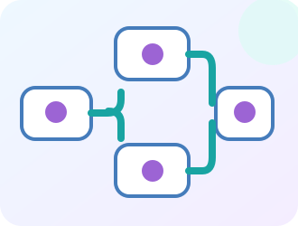

JPEG · PNG · HEIC · TIFF
Работа с JPEG, PNG, HEIC и TIFF по одному или пакетами.
Конвертируйте, изменяйте размер и оптимизируйте изображения. Создавайте PDF и автоматизируйте задачи на Mac.
Готовимся к запуску в Mac App Store.

Конвертируйте, изменяйте размер и оптимизируйте изображения. Создавайте PDF и автоматизируйте задачи на Mac.

Распознавайте текст в изображениях и многостраничных PDF, проверяйте и экспортируйте результаты.
Работа с JPEG, PNG, HEIC и TIFF по одному или пакетами.
Размеры и пропорции изображений.
Поддерживаемая оптимизация без потерь или с потерями; вывод только если меньше.
Studio объединяет OCR, распознавание кодов, PDF, создание значков и автоматизацию. Разовая покупка без подписки.
Studio — необязательная постоянная покупка в приложении.
Распознавайте текст в изображениях и многостраничных PDF, проверяйте и экспортируйте результаты.

Читайте коды из изображений, PDF и папок или используйте совместимые камеры и сканеры.

Создавайте PDF, экспортируйте страницы в изображения, выбирайте и поворачивайте их.

Создавайте ICO и ICNS и проверяйте размеры перед экспортом.

Создавайте QR, Code128, Data Matrix, EAN, PDF417 и Aztec в PNG или PDF.

Сохраняйте сценарии, отслеживайте папки и запускайте действия Finder.
Studio — необязательная постоянная покупка в приложении.
Вопросы о Studio| Возможность | Free | Studio |
|---|---|---|
| Конвертация, размер, оптимизация | Включено | Включено |
| Очередь, Inspector, сравнение, гистограмма | Включено | Включено |
| Базовое создание PDF | Включено | Включено |
| PDF Studio и экспорт страниц | — | Включено |
| OCR и распознавание кодов | — | Включено |
| Создание кодов и ввод камерой/сканером | — | Включено |
| Наборы ICO и ICNS | — | Включено |
| Процессы, отслеживаемые папки, быстрые действия Finder | — | Включено |
Местная цена, доступ Studio и право на пробный период показаны в приложении. Покупки и восстановление выполняет Apple.
Конвертация, оптимизация, создание PDF и OCR выполняются на Mac. Содержимое файлов не передается сервису пробного доступа Studio. Для доступа к файлам, папкам, камерам и сканерам требуется разрешение; настройки, история, закладки и записи с именами, путями или ошибками могут храниться локально.
Политика конфиденциальности